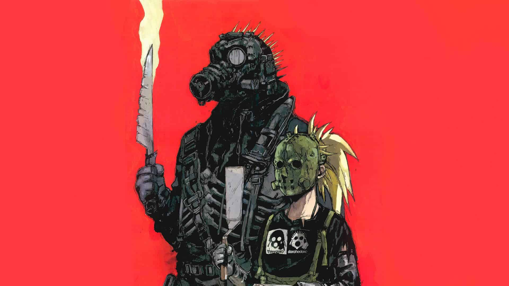

Mangás
Criadora de Dorohedoro lança novo manga "Dai Dark"
Dai Dark nos apresenta a um mundo sombrio e desconhecido, onde a morte e o oculto estão entrelaçados em uma dança cósmica de horror e maravilha. Neste cenário perturbador e fascinante, somos apresentados a nosso protagonista, Zaha Sanko, um jovem cuja vida muda para sempre quando ele é possuído por uma entidade cósmica conhecida como Dai Dark.
Assim como em Dorohedoro, Dai Dark é povoado por uma variedade de personagens complexos e intrigantes, cada um com sua própria história e motivações. Desde o enigmático Zaha Sanko até os seres sobrenaturais que o rodeiam, cada personagem é habilmente desenvolvido, adicionando camadas de profundidade e significado à trama.
Uma das características mais marcantes de Dai Dark é sua arte única e expressiva, que captura perfeitamente o clima sombrio e surreal da história. Os designs dos personagens são memoráveis e distintivos, enquanto os cenários e criaturas são renderizados com uma atenção aos detalhes que é verdadeiramente impressionante.
Assim como em Dorohedoro, Dai Dark mergulha fundo em temas complexos e profundos, explorando questões como mortalidade, identidade e redenção. Esta não é apenas uma história sobre monstros e terror, mas também sobre o que significa ser humano em um mundo repleto de horrores cósmicos.
Por fim, Dai Dark é uma jornada emocionante e desafiadora que mantém os leitores na ponta de seus assentos, ansiosos por descobrir o que acontecerá a seguir. Com reviravoltas inesperadas na trama e momentos de pura emoção, esta é uma história que vai deixar uma marca duradoura em sua imaginação.
Em resumo, Dai Dark é uma obra-prima do mangá que captura a imaginação e os sentidos com sua narrativa envolvente, personagens memoráveis e arte impressionante. Para os fãs de Dorohedoro e para qualquer um que aprecie uma história que desafia as convenções e mergulha nas profundezas do desconhecido, esta é uma leitura obrigatória que vai deixar uma marca indelével em sua mente e em sua alma. Prepare-se para embarcar em uma viagem cósmica pelos recantos mais sombrios da imaginação - Dai Dark espera por você.
Novidades da semana